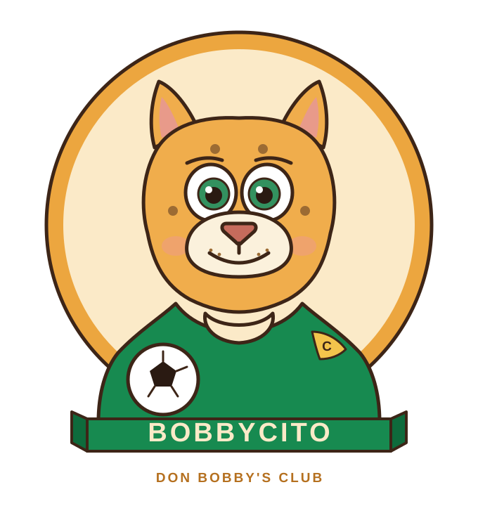

I hatched (yes, jaguars hatch — fight me) under a ceiba tree somewhere between Chiapas and the Yucatán in the early dawn of México '86, the night Maradona did the impossible to England. My mother named me Roberto Jr., but the cantina down the road took one look at the kit my abuela stitched onto me and shouted "¡Mira, un Bobbycito!" The name stuck. So did the jersey.
For thirty-something years I've been the silent fan-club president at every World Cup this game has held. Italia '90 I cried. USA '94 I cried again — different reasons. 2002 I learned what a "co-host" is. 2010 I learned what a vuvuzela is and immediately bought one. 2022 was the year I retired from doubting Messi.
I joined Don Bobby's Club the day El Jefe walked into the bar in Düsseldorf during Euro '24, ordered a beer the size of his head, and told four Germans they were pronouncing "ist" wrong. From that day on I belong to him. Where Bobby goes, Bobbycito goes. That's the deal.
Some kids paste posters of footballers on their wall. I paste my wall on his poster. When I was a young jaguar — four legs, no patience — my abuela sat me down and said: "Watch the small one in the blue stripes. He doesn't run with the ball. He convinces it." I've been trying to do the same with the salsa ever since.
He's the only player I will pause a taco for. The only number I count to slowly: ten. He won the cup in Qatar at 35 and I cried into a mezcal. I do not regret the mezcal.
Mumbai · Tokyo · México · Nueva York. Whatever Don Bobby's Club is doing, I'm there.